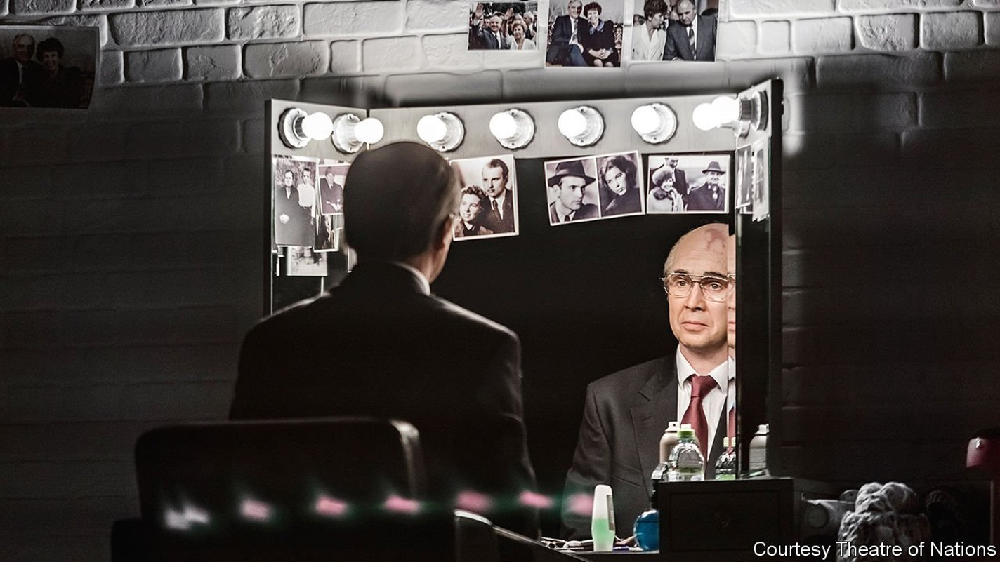
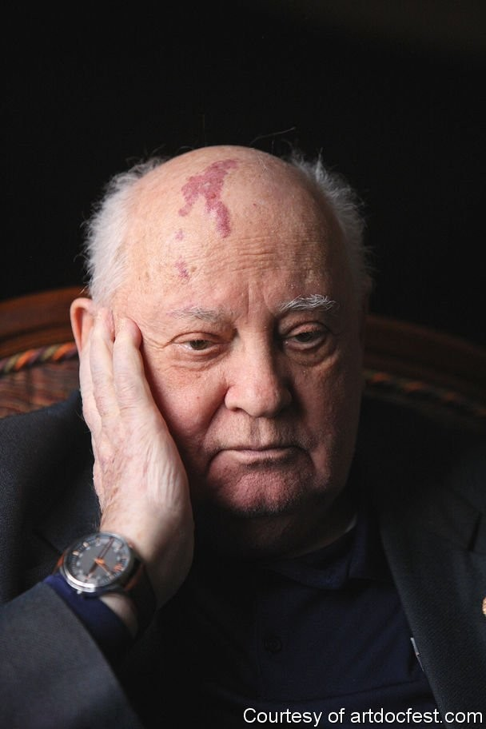

The life and love of the Soviet Union’s last leader
As a play and a film show, Mikhail Gorbachev loved Raisa more than he loved power

A DRESSING ROOM, two makeup stations and two mirrors. A selection of wigs and dresses. A pair of actors—a man and a woman—enter and sit on stools, facing the audience. They speak in their normal voices, without accents or costumes. All that will come later.
Listen to this story.Enjoy more audio and podcasts on iOS or Android.
Listen to this story
Save time by listening to our audio articles as you multitask
For now, they stick to the facts. “At the end of May 1999, Raisa Maksimovna accompanied her husband to Australia,” the woman begins. “Gorbachev admitted that the return flight was long and difficult,” the man continues, “and he still can’t help the thought that it gave a jolt to a process that had already started…”
The process was leukaemia. That July, the actors explain, Raisa Gorbachev went to Germany for treatment. Mikhail was at her side, holding her, talking to her and watching her die. The ward had to be kept sterile and Mr Gorbachev robed in full protective gear. To be able to see and hear him, Raisa refused morphine; one night, to distract her from the insufferable pain, he cradled her in his arms as they told each other stories from their half-century together.
Over the next three hours Evgeny Mironov (pictured) and Chulpan Khamatova, two of Russia’s best-loved actors, recount and relive those stories on the stage of the fashionable Theatre of Nations in Moscow. Step by step, they go deeper inside their characters. They put on makeup and try out voices and gestures: the deep southern vowels Mikhail acquired in Cossack country; Raisa’s prissier diction, ringing with the notes of socialist optimism. Trained in the school of Russian psychological realism, they embody the Gorbachevs with empathy and virtuosity.
The impersonation is both a personal tribute—“I like Gorbachev,” confides Mr Mironov—and a study of a man who changed the lives of everyone on stage and in the audience. “We wanted to understand where he came from and how he left, taking nothing with him, his faith in socialism still intact,” Mr Mironov says. Intentionally and otherwise, Mr Gorbachev also changed the map of the world—shrinkages and mutations that are captured in a projection on the theatre’s wall.
He may be the last general secretary of the Communist Party to appear on stage in Russia. But he is certainly not the first. During the Soviet period, productions pegged to the jubilees of Soviet leaders, past and present, were part of the official hagiography. Had Mr Gorbachev made different choices in the Kremlin, he might conceivably be presiding over the Politburo today, with every theatre in the land glorifying his 90th birthday this March.
The flywheel of history
But by the time he came to power in 1985 (shortly before Mr Mironov enrolled at the Moscow Art Theatre School), the idea that one of Russia’s trendiest, priciest theatres would honour a former Soviet leader out of choice, not obligation, would have seemed ridiculous. And these days, too, the most common feeling towards Mr Gorbachev in Russia is not gratitude, but contempt. Intoxicated by imperial nostalgia and newfound wealth, the ruling elite—like much of the country—sees him as at best a failure and at worst a traitor, who triggered the disintegration of a superpower.
It is telling, then, that “Gorbachev” originated in Latvia, one of the three Baltic republics liberated by his policies. In a conversation recorded for a documentary produced in tandem with the play, Alvis Hermanis, the show’s Latvian director, told Mr Gorbachev: “I just realised that, after my mother and father, you are the third person who defined my life—and the lives of millions.” Though he has worked extensively in Russia, Mr Hermanis was barred from the country in 2014 after criticising Vladimir Putin; it took a personal appeal to the president by the director’s leading man for him to return and meet Mr Gorbachev.
His text was developed from the Gorbachevs’ memoirs and is divided into short narratives: “Gorbachev and First Love”, “Gorbachev and the Corpse of Stalin”, “Gorbachev and Honey”. It is not a biopic or a political drama. Mr Gorbachev’s stint at the helm of the Soviet state is skipped in one line: “Those six years went like a day.” The director and actors are preoccupied by different questions: how did this man climb to the top of a system that was designed to suppress human instinct? (“Our biggest mistake was to overlook Gorbachev,” the head of the KGB later confessed.) And what possessed him to undertake the reforms that led, in 1991, to the fall of the Soviet Union and his own loss of power?
Volumes have been written about the economic inevitability of the Soviet collapse, about Mr Gorbachev’s political miscalculations and the influence of the West. Theatre had a cameo role in the process, too. Shortly after he came to office, Mr Gorbachev went to the Moscow Art Theatre to watch Chekhov’s “Uncle Vanya”. Afterwards he called the director to say that he found Vanya’s part heart-rending. “It is time to get our flywheel [of reform] moving again,” he said.
But by focusing on his relationship with Raisa, Mr Hermanis points to a motive rarely associated with Soviet bosses: love. “I am convinced that perestroika could not have happened had it not been for Raisa and his love for her. He has been winning her all his life,” the director says. Osip Mandelstam, a poet who died in the gulag, captured this intimate view of history: “If it were not for Helen,/What would Troy be to you, O warriors of Achaea?” Mandelstam wrote. “The sea, and Homer, are all moved by love.”
The couple met on a dance floor at Moscow State University, to which Mr Gorbachev had been admitted without an examination thanks to the record harvest he and his father produced in his native Stavropol region. A provincial combine-harvester operator with a southern accent, he was an outsider in the world of the post-war urban intelligentsia that he aspired to join. Raisa—a dutiful student in the philosophy faculty—personified his dream of a different life, which had more to do with classical Russian literature than with the Marxism and Leninism that she herself studied and later taught.
They married in September 1953, six months after Stalin’s death. The bride wore a new dress but had to borrow her shoes; the wedding was celebrated with beetroot-and-potato salad in a university canteen. Thereafter, whether they were trekking across the dusty steppes of Stavropol, or strolling at night down the snowy lanes at their government dacha—away from the listening devices—she shared his feelings, thoughts and doubts. “We can’t carry on living like this,” he told her in the small hours after he came to power.
A higher love
The couple’s public companionship distinguished him from previous Russian rulers. A Russian monarch was wedded to his people and was not supposed to have a private life. The wives of other Soviet leaders had been kept out of sight. Raisa’s profile, her taste for elegant dresses, intelligence and sophistication became a source of jokes and resentment among Soviet people. But—in the play, and perhaps in reality—it was his devotion to her that compelled Mr Gorbachev, as Soviet leader, to value human life above ideology or geopolitics. He loved her more than he loved power.
This became clear during the attempted coup in August 1991 that brought on Raisa’s first stroke. When the couple returned from Crimea, where they were kept under house arrest, Mr Gorbachev did not join the citizens celebrating his release and their victory over the KGB. He stayed with his beloved. As Mironov-Gorbachev puts it on stage: “I was not married to the country—Russia or the Soviet Union. I was married to my wife and that night I went with her to hospital. Perhaps it was the most crucial decision of my political life.”
Mr Gorbachev may be reviled by many compatriots, but some of Mr Mironov’s and Ms Khamatova’s stardom has rubbed off, and made “Gorbachev” a hit. Mr Gorbachev himself gave an approving thumbs-up from his box when he saw the show, receiving a standing ovation from a sympathetic audience. “I am so glad he had a chance to experience this,” says Mr Mironov.
It must have been an uncanny experience, for at the end of the play Mr Mironov transforms himself into the present-day 89-year-old with such eerie precision that the distinction between them dissolves. He sits alone at the dressing table, memories of his life with Raisa playing in his head, unable to throw away her things and still sensing the perfume of her dresses.
This elderly incarnation is the subject of the accompanying documentary by Vitaly Mansky, a Latvia-based Russian director (recently arrested in Moscow for protesting against the poisoning of Alexei Navalny, an opposition politician). The film is called “Gorbachev.Rai”—a play on the diminutive form of Raisa, which also means “heaven”. It includes scenes of the theatre actors talking to Mr Gorbachev, but it begins with a shot of several Soviet telephones, silent relics of his former supreme power. Now he lives alone and moves slowly. Mr Mansky peppers him with questions and dogmatic assertions about politics, freedom and his role in history.

Living legend
Defiantly, Mr Gorbachev breaks out of the director’s frame, just as he once broke free from ideological constraints. Listening to the questions, he studies the rippled veins on his arms, surprised by the metamorphosis of his own body. The physical frailty (see picture above) only underscores the impression of enormous authority, complexity and wit. No actor, not even Mr Mironov, could compete with his charisma.
“You say that with Raisa’s death, the meaning of life itself is gone,” says Mr Mansky. “Gone,” Mr Gorbachev confirms. “But is the meaning of life just to love one woman and have children with her?” Mr Mansky probes incredulously. “Does it not have some higher meaning?” Mr Gorbachev replies: “But what could be higher than to love a woman and be loved by her?”
At the end of the film Mr Gorbachev, in his baritone voice, recites a Ukrainian song (also heard during the play) about a silvery river and a heavenly green wood, which he heard from his mother when he was a child. A man who redirected 20th-century history, and liberated hundreds of millions from Soviet rule, strikes a lonely figure from a different era. Yet he is more free than any occupant of the Kremlin before or after him. “Call this film ‘A Conversation with a Weirdo’,” he advises Mr Mansky, with a sparkle in his eye. ■